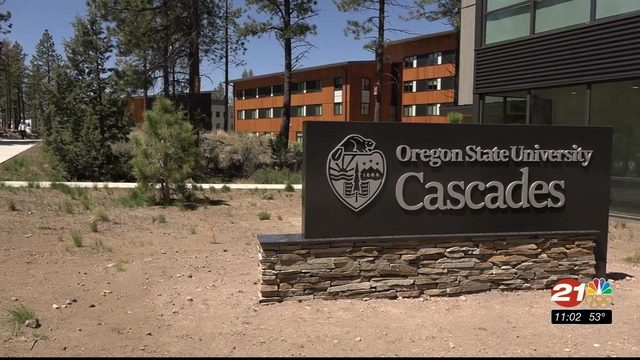
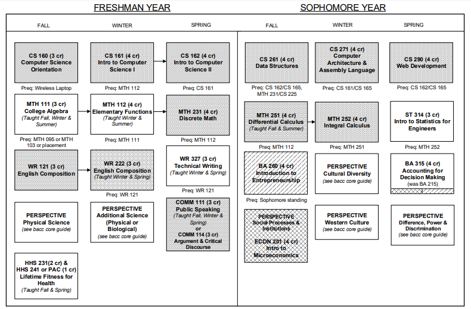
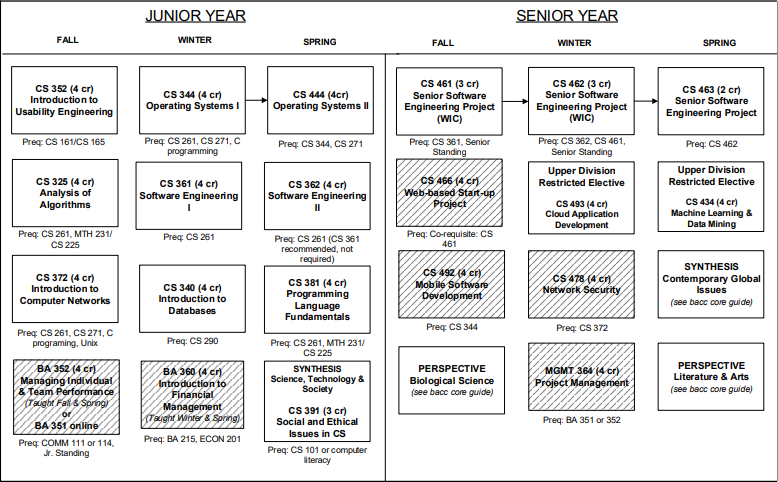
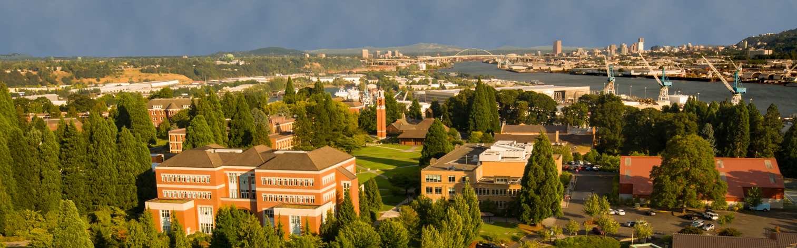
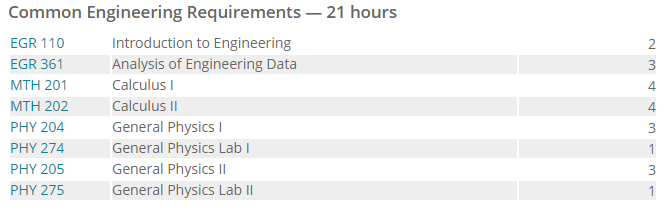
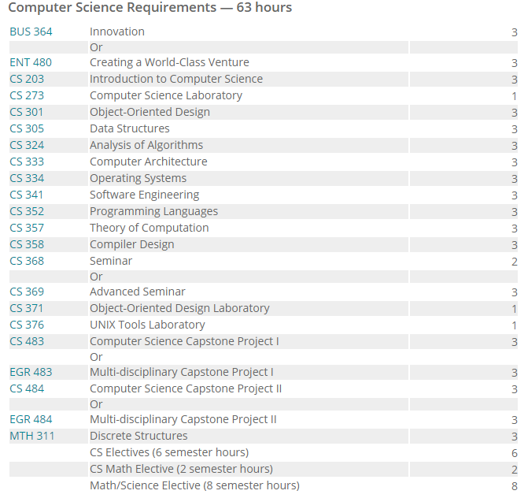

OSU Cascades is located in Bend Oregon. the university offers a Computer science major with an option Baccalaureate core, 50 credits of Pre-Computer Science, 47 of Pro-School Computer Science, 32 credits in the Applied Computer Science Option and electives if needed. Because most of todays society works and function on mobile application, this program may attract many students. in addition in corvallis The Computer Science master's program provides advanced instruction beyond the undergraduate degree. It prepares students for careers in which a higher level of experience is required. The PhD program prepares students for work in government or industry research laboratories or industry research laboratories or for careers at universities.
 

University of Portland CS degree
The University of Portland is located in Portland Oregon and offers a computer science which aims to prepare students for a profession in the diverse career paths of today and/or for graduate school. The School offers a Masters of Engineering. The program aims for students to be able to solve technical and real-world problems using advanced knowledge of mathematics, science, computing and engineering. While i couldnt find a sample student program, the complete and extensive list of requiremnts is outlined on their website. but, here is a snapshot for quick reference.

